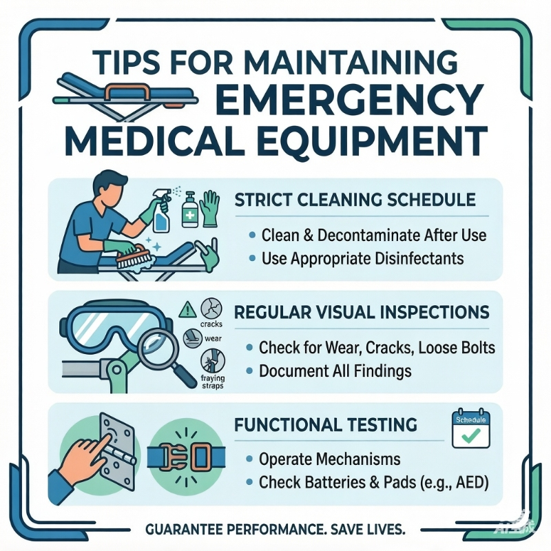

Beyond the Rescue: How to Protect Your Lifesaving Investment
FEB 28, 2026

Introduction
Buying a high-quality Spinal Board or an Elite-Guard First Aid Kit is only the first step. The real challenge for Occupational Health & Safety (OHS) managers and EMS providers is ensuring that equipment remains mission-ready for years, not just months.
Neglecting maintenance doesn't just shorten the lifespan of your gear—it increases your operational risk. Here is how to keep your rescue assets in peak condition.
1. Environmental Decontamination (Industrial vs. Outdoor)
A "one-size-fits-all" cleaning approach doesn't work. A stretcher used in a chemical plant faces different threats than one used on a muddy hiking trail.
The Pain Point: Corrosive substances or organic debris degrading the material over time.
The Action: After every mission, use pH-neutral disinfectants for our HDPE Spinal Boards. For the Elite-Guard Series, pay special attention to the textile hinges and zippers where sand or salt can cause mechanical failure.
The Benefit to You: You avoid premature replacement costs and ensure a hygienic environment for every patient.
2. The "Hidden Flaw" Inspection (Structural Integrity)
Visual checks are common, but "functional stress tests" are what save lives. A crack in a spine board or a loose bolt on a foldable stretcher can be invisible to the naked eye until it’s under load.
The Pain Point: Equipment failure during actual patient transport.
The Action: Regularly operate all folding mechanisms and locking pins. For Spinal Boards, check for "stress whitening" or deep gouges that could compromise the board’s rigidity.
The Benefit to You: Total confidence that your gear will perform under the weight of a real emergency.
3. Consumables Audit: Expiry Dates & Seal Integrity
The hardware (stretchers) might last a decade, but the "software" (the medical supplies inside) requires constant vigilance.
The Pain Point: Opening a first aid kit in a crisis only to find expired bandages or tampered/opened items that are no longer sterile.
The Action: Perform a routine audit of "Best Before" dates and check that all sterile items remain in their original, unsealed state. To simplify this process, always keep our Medicine pack & supplies on hand for instant replenishment.
The Benefit to You: Economy and Peace of Mind. Instead of replacing an entire professional kit, you can simply swap out the specific modules or expired items. This lowers your long-term maintenance costs while ensuring every component is 100% ready for use.
Empowering Your Safety Strategy
At GoSafeMed, we don’t just supply hardware from the manufacturing hubs of Jiangsu and Guangdong; we provide the strategic resources to keep those tools working.
Whether you are managing a corporate office safety program or a professional EMS fleet, our FDA, CE, and ISO 13485 certified equipment is designed for durability and ease of maintenance.
Looking for cost-effective refill solutions for your existing kits?
Contact Hellen at GoSafeMed – We help you solve the procurement and maintenance puzzle so you can focus on what matters most: saving lives.